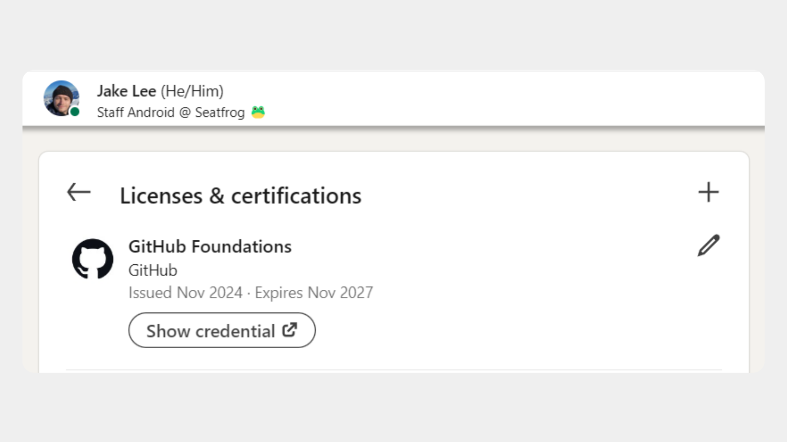

Introdução ao Git e GitHub
Aprenda os conceitos básicos do Git e do GitHub, incluindo controle de versão, repositórios, commits e branches.
Começar móduloEste guia de estudo foi elaborado para ajudar você a se preparar para o exame de certificação GitHub Foundations. Ele cobre os principais tópicos e conceitos que você precisa entender para ter sucesso no exame.
Aprenda os conceitos básicos do Git e do GitHub, incluindo controle de versão, repositórios, commits e branches.
Começar módulo
Aprenda sobre os diferentes produtos e serviços oferecidos pelo GitHub, como GitHub Actions, GitHub Packages e GitHub Security.
Começar módulo
Aprenda sobre as práticas e ferramentas de varredura e segurança disponíveis no GitHub para proteger seus projetos.
Começar módulo
Aprenda os conceitos básicos do Copilot, incluindo como ele pode ajudar a aumentar sua produtividade na programação.
Começar módulo
Aprenda como funciona o GitHub Codespaces e como é possível utilizá-lo para melhorar seu fluxo de trabalho.
Começar módulo
Aprenda sobre as ferramentas e técnicas de gerenciamento de projetos disponíveis no GitHub para organizar e acompanhar o progresso do seu trabalho.
Começar módulo
Aprenda os conceitos básicos do Markdown, incluindo como criar documentos formatados de forma simples e eficiente.
Começar módulo
Aprenda sobre como contribuir em projetos open source, incluindo práticas recomendadas e como colaborar efetivamente com a comunidade.
Começar módulo
Aprenda sobre como aplicar práticas open source dentro da sua organização para melhorar a colaboração e a qualidade do software.
Começar módulo
Aprenda práticas para garantir a segurança dos seus repositórios no GitHub, incluindo gerenciamento de permissões e proteção de branches.
Começar módulo
Aprenda sobre as práticas e ferramentas para administrar efetivamente o GitHub na sua organização, incluindo gerenciamento de equipes e configurações avançadas.
Começar móduloTeste seus conhecimentos com exercícios práticos relacionados aos módulos estudados. Reforce o aprendizado e prepare-se para o exame de certificação.
Começar exercíciosFaça um simulado do exame de certificação GitHub Foundations para avaliar seu conhecimento e identificar áreas que precisam de mais estudo.
Começar simuladoQuando você se sentir preparado, inscreva-se para o exame de certificação GitHub Foundations. O exame é online e pode ser feito no seu próprio ritmo.
O exame é pago, e o valor pode variar dependendo da sua localização. Porém, ao se inscrever no programa do GitHub Education, o estudante ganha um voucher exclusivo para realizar a prova de forma gratuita.
Saiba mais sobre o GitHub EducationObter a certificação GitHub Foundations demonstra seu conhecimento e habilidades no uso do GitHub, uma das plataformas de desenvolvimento mais populares do mundo. Isso pode abrir portas para novas oportunidades de carreira, aumentar sua credibilidade profissional e ajudá-lo a se destacar no mercado de trabalho.
